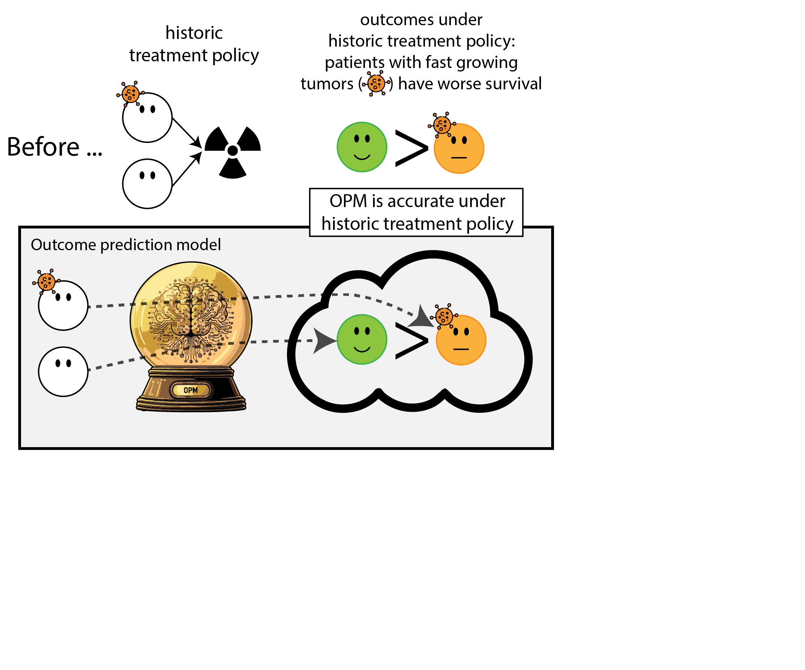
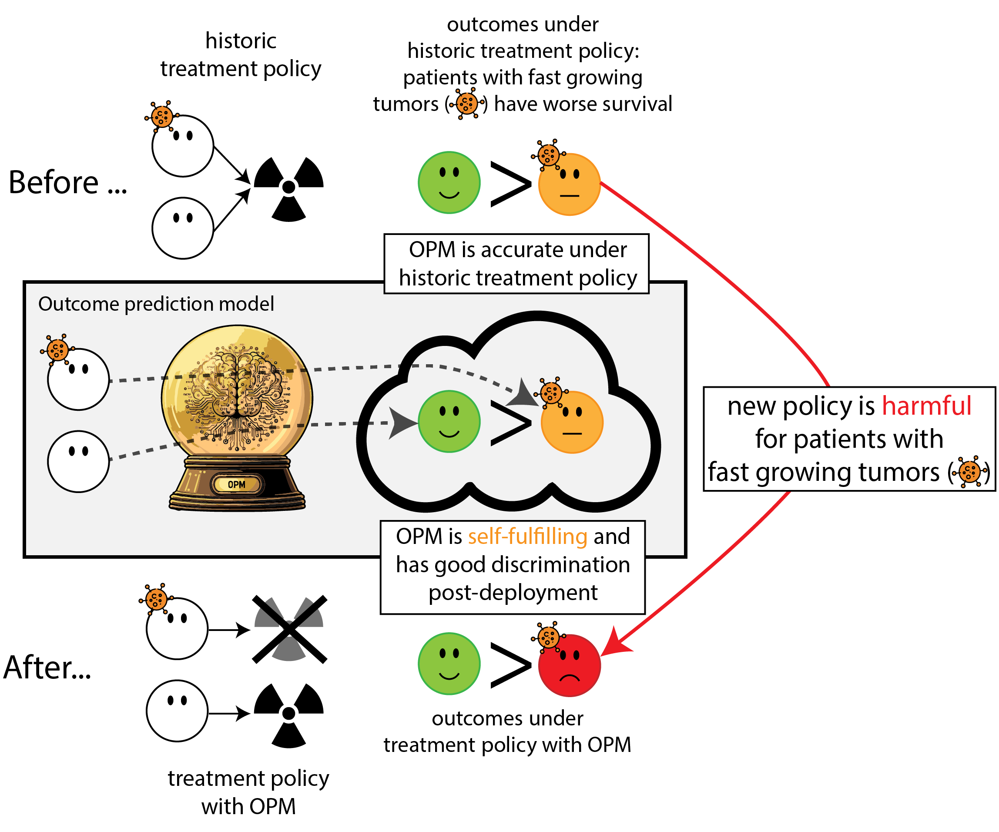

Aligning development, deployment and monitoring for AI: a causal perspective
MLHC pre-conference workshop 2025
Department of Data Science Methods, Julius Center, University Medical Center Utrecht
2025-08-14
much of AI is ‘predict predict predict’
predict sepsis
predict diagnosis of structural heart disease from ECG
predict next token in a sequence …
these models take input data, model its statistical properties (e.g. what to expect for outcome \(Y\) given observation \(X\))
evaluated on predictive performance (e.g. accuracy, AUC, calibration)


Medical Interventions based on (AI) prediction models
- prevention: reduce risk of heart attacks with cholesterol lowering medication, based on predicted risk of a heart attack (Hippisley-Cox et al. 2024)
- give chemotherapy to breast cancer patients with a high risk of recurrence (Alaa et al. 2021)
- triage / early warning: patients at high risk of sepsis (Henry et al. 2015)
- early detection: structural heart disease from ECGs performed in primary care
AI models tend to break under data shifts
deploying AI in healthcare is an intervention

the entire purpose of an AI is to break (improve) a system, meaning to cause a data shift
see a potential issue here?
What can go wrong when AI development and deployment are misaligned?
Where causal inference may help
What is causal inference?
- ‘classical’ prediction / statistics / AI: model associations; know what to expect for outcome \(Y\) given observation \(X\), when we keep our hands behind our back and do not change the system
- causal inference: answers questions what if … - we changed the system (i.e. intervened by giving a certain treatment \(T\)) - what would be the outcome \(Y\)?
How to?
- association:
- representative (observational) data
- causal inference:
- experimental data (randomized controlled trials)
- approximate with observational data using assumptions (unconfoundedness, positivity, consistency)
Also causal inference: predicting outcomes under hypothetical interventions
- expected outcome \(Y\) if we give treatment \(T\) to patient with features \(X\)
- how is this different from ‘standard’ prediction?
Hilden and Habbema on prognosis (Hilden and Habbema 1987)
“Prognosis cannot be divorced from contemplated medical action, nor from action to be taken by the patient in response to prognostication.”
What can go wrong if predictions have unclear relationship with treatment decisions?
- treatment-naive: simply ignore treatment in the predictions
- include treatment but there are important confounders that are not included in the model
Treatment-naive prediction models: predict outcomes based on features, ignoring treatments

Treatment-naive prediction models: predict outcomes based on features, ignoring treatments
… that are important to the outcomes

When accurate prediction models yield harmful self-fulfilling prophecies
How this can go wrong if we misalign the AI evaluation metric and the patient oucome (Van Amsterdam et al. 2025)






Which models could benefit from this?
- cardiovascular risk prediction (Peek, Sperrin, and van Staa 2017)
Big hurdles in AI deployment from an intervention / policy perspective
- prediction model outputs do not automatically align with value for intervention decision making (except when clearly defined treatment strategy (i.e. ‘prediction under intervention’))
- evaluting the effects of deploying a model is causal inference
- drawing conclusing from monitoring under shifts in treatment policy is hard
How are causal models special
- clear alignment between prediciton accuracy and value for treatment policy:
Pick the treatment that maximizes the expected outcome
- stable predictions under shifts in treatment policy, conditional on the model’s features (Feng et al. 2024)
What to measure
For ‘non-causal’ prediction models that don’t factor in treatment decisions but predict post-treatment outcomes
| pre-deploy | deployment study | monitoring | ||
|---|---|---|---|---|
| metric | ||||
| model | discrimination (AUC) | üîÅ | üîÅ | |
| calibration | üîª | üîª | ||
| health system | interventions | üîÅ | üîÅ | |
| patient outcomes | üîÅ | üîÅ |
Legend
üîÅ changes‚ÄÉ‚úÖ stable‚ÄÉüîª worsens
What to measure
Prediction under intervention preserves calibration under shifts in policy conditional on the model’s features
e.g. (Feng et al. 2024)
| pre-deploy | deployment study | monitoring | ||
|---|---|---|---|---|
| metric | ||||
| model | discrimination (AUC) | üîÅ | üîÅ | |
| calibration | üîª ‚úÖ | üîª ‚úÖ | ||
| health system | interventions | üîÅ | üîÅ | |
| patient outcomes | üîÅ | üîÅ |
Legend
üîÅ changes‚ÄÉ‚úÖ stable‚ÄÉüîª worsens
How do RCTs fit in?
- RCTs that randomize treatment at individual patient level:
- typical study for evaluating the effect of a new treatment
- from these data, can develop prediction under intervention models (e.g. Path statement (Kent et al. 2020))
- typically too small to build powerful model, or did not measure right features
- RCTs that randomize deployment of AI:
- measure effect of deployment on interventions and patient outcomes
- take time; are they ethical post-deployment?
Takeaways
- when predicting prognosis, need well defined relation between prediction and potential treatment decisions
- in particular, prediction under intervention has the advantages of:
- clear relationship between model performance and value for decision making
- stable calibration under shifts in treatment policy, conditional on the model’s features
- these models need unconfoundedness, so either
- develop using RCT data
- use observational causal inference
- evaluate and monitor AI based on what we care about: impact on healthcare
Bigger picture
- want AI to improve healthcare
- we’re good at predicting / modeling statistical associations
- takes a jump to get to better decision making
- models developed with causality in mind can better navigate some of these jumps
- clear relationship between performance and value for decision making
- stable calibration under shifts in policy (conditional on model’s features)
- assessing the impact of deployment on patient outcomes is causal inference
References
©Wouter van Amsterdam — WvanAmsterdam — wvanamsterdam.com/talks